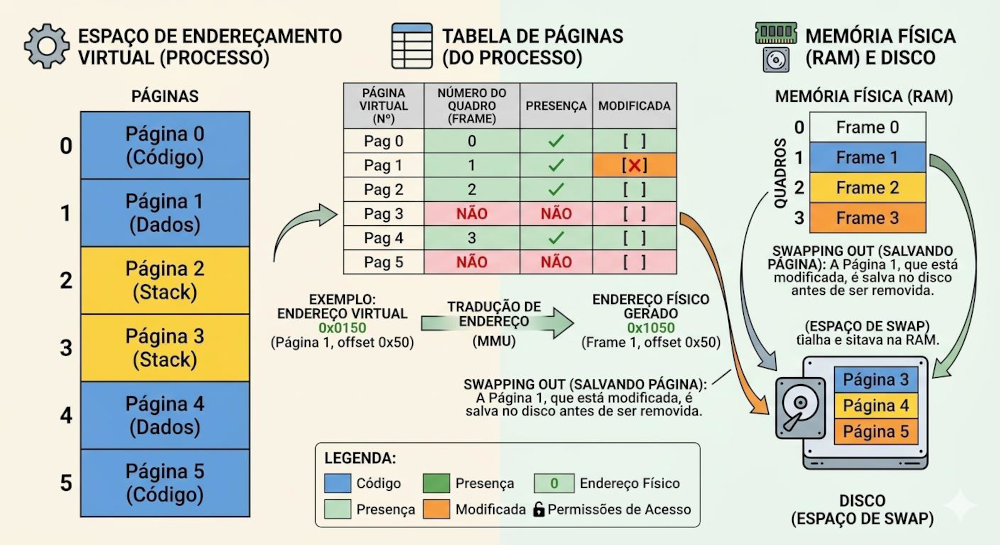

Gerenciamento com Movimentação
Quando a memória RAM atinge o seu limite físico, o Sistema Operativo (SO) não pode simplesmente "travar" ou recusar a abertura de novos programas. Ele precisa de adotar estratégias ativas para gerir o espaço. Historicamente, a evolução deu-se em duas grandes etapas:
- Etapa 1: Swapping (Troca de Processos)
Foi a primeira abordagem utilizada. Quando a RAM enche, o SO identifica um programa inteiro que está ocioso
(por exemplo, um navegador minimizado) e copia todos os seus dados para o disco rígido (swap out), libertando
espaço imediato na RAM para outro processo. Quando o utilizador volta a abrir o navegador, o SO traz tudo de
volta do disco para a RAM (swap in).
O Problema: Mover blocos gigantescos de dados entre a RAM e o disco rígido (que é muito mais lento) torna o sistema extremamente pesado e demorado.
- Etapa 2: Memória Virtual e Paginação (A Solução Moderna) Para resolver a lentidão do Swapping, o SO passou a usar a Memória Virtual baseada em Paginação. Em vez de mover o programa inteiro de uma só vez, o SO cria uma ilusão (abstração), "enganando" os programas para que achem que o computador tem memória ilimitada. Para que isso funcione, o SO fatia o código do programa em pequenos blocos de tamanho fixo chamados Páginas (geralmente de 4 KB). Simultaneamente, a própria RAM física é fatiada em blocos do mesmo tamanho, chamados Quadros (Frames).
- Exemplo Prático (Vida Real): É esta tecnologia que lhe permite abrir um jogo de última geração que ocupa 50 GB de espaço num computador que tem apenas 8 GB de RAM. O SO não carrega os 50 GB de uma vez. Ele carrega para a RAM apenas as "Páginas" essenciais para o menu inicial e para o nível/mapa onde a sua personagem está exatamente agora. As texturas do último nível do jogo continuam a dormir tranquilamente no disco rígido até serem precisas.
- Exemplo Técnico: Quando o processo corre, a CPU trabalha com "Endereços Lógicos" (falsos). O hardware de tradução (MMU - Memory Management Unit) consulta uma Tabela de Páginas em tempo real para descobrir em qual Quadro da RAM física aquela Página específica está alocada neste milissegundo.
- A MMU deteta a ausência da página e interrompe a CPU.
- O SO congela o programa e localiza a página no disco rígido.
- O SO procura um Quadro livre na RAM (se estiver cheia, substitui uma página antiga).
- A nova página é copiada para a RAM.
- A tabela de páginas é atualizada e a instrução é retomada sem que o programa perceba.

Como a Memória Virtual funciona na prática: Para que esta "mágica" da Etapa 2 aconteça, o SO lida diariamente com dois grandes eventos: O Mecanismo Diário: Page Fault (Falta de Página) Se o jogo carrega apenas partes do mapa, o que acontece quando a sua personagem corre para uma área nova que ainda não está na RAM? Acontece um Page Fault. Trata-se de uma interrupção gerada pelo hardware (MMU) quando a CPU tenta aceder a uma página que está no disco e não na RAM. Os passos para tratar isto são:
Algoritmos de Substituição de Páginas
Na Memória Virtual, quando a RAM atinge a sua capacidade máxima e o Sistema Operacional (SO) precisa trazer uma nova página do disco, ele é forçado a "expulsar" (substituir) uma página que já está na memória. Para decidir de forma inteligente exatamente qual página deve sair sem prejudicar o desempenho do computador, o SO utiliza algoritmos de substituição. Os principais são:
- FIFO (First-In, First-Out - A primeira a entrar é a primeira a sair): A lógica é simples: a página que está há mais tempo na RAM é a escolhida para ser removida. O Problema: Apesar de ser muito fácil de implementar, é um método "cego". O FIFO pode acabar expulsando uma página antiga, mas que continua sendo intensamente usada pelo sistema (como variáveis essenciais de um programa aberto).
- LRU (Least Recently Used - Menos Recentemente Usada): Para corrigir a falha do FIFO, o LRU foca-se no tempo de inatividade. Ele expulsa a página que está há mais tempo sem receber nenhum acesso da CPU. Característica: É um algoritmo de desempenho excelente, mas possui um grande obstáculo: é muito caro e complexo de ser implementado em hardware, pois exige que o sistema registre o milissegundo exato de cada acesso à memória.
- LFU (Least Frequently Used - Menos Frequentemente Usada): Em vez de focar no tempo do último acesso, o LFU foca na quantidade de acessos. Ele expulsa a página que foi acessada o menor número de vezes no total. Característica: A premissa aqui é matemática: se uma página foi pouco usada até agora, a chance de ela ser necessária no futuro é menor.
- NRU (Not Recently Used - Não Usada Recentemente): Como o LRU perfeito é muito "pesado" para o hardware, o NRU surge como uma aproximação inteligente e leve. O sistema monitora as páginas usando apenas dois marcadores (bits): um bit de referência (marcando se ela foi lida) e um bit de modificação (marcando se ela foi alterada/escrita). Quando precisa de espaço, o SO varre a RAM e expulsa a página que estiver na categoria de menor prioridade (dando preferência para expulsar uma página que não foi acessada recentemente e que não sofreu modificações).
-
O Vencedor Hoje em Dia: Aproximações do LRU (O Algoritmo do Relógio) Na teoria matemática, o LRU (expulsar a página menos recentemente usada) é o algoritmo perfeito. No entanto, no mundo real, implementá-lo na sua forma pura é impossível: exigiria um hardware caríssimo para registar o milissegundo exato de cada acesso à memória. Por outro lado, o FIFO (a primeira a entrar é a primeira a sair) é muito rápido e barato, mas é "cego": expulsa páginas importantes simplesmente porque são antigas. A solução dos Sistemas Operativos modernos (como o Linux e o Windows) foi criar um "meio-termo" brilhante: partir da simplicidade do FIFO e dar-lhe um pouco da inteligência do LRU. Esta evolução aconteceu em dois passos:
A ideia base: Algoritmo de Segunda Oportunidade Para evitar que o FIFO expulse uma página antiga que ainda está a ser intensamente usada, os engenheiros adicionaram um pequeno marcador a cada página, chamado Bit de Referência:
- Se a página foi lida ou usada recentemente pela CPU, o seu bit fica a 1.
- Quando a página chega à frente da fila do FIFO para ser expulsa, o SO olha para o bit. Se for 1, o SO não a expulsa. Ele muda o bit para 0 (dando-lhe uma "segunda oportunidade") e atira-a novamente para o final da fila. A página só é efetivamente expulsa se o SO a avaliar e o seu bit já estiver a 0.
A implementação real: O Algoritmo do Relógio (Clock) O problema da Segunda Oportunidade é que remover uma página do início da fila e movê-la para o final dá muito trabalho ao processador. Para resolver isto, nasceu o Algoritmo do Relógio (Clock), que utiliza a exata mesma lógica, mas com um design físico mais inteligente:
- Em vez de uma fila reta, o SO organiza as páginas num formato circular (como as horas num relógio).
- Um "ponteiro" roda continuamente por essas páginas. Se o ponteiro bater numa página com bit 1, muda-o para 0 e avança. Se bater numa página com bit 0, expulsa-a imediatamente.
Atualmente, os computadores não usam nem o FIFO puro, nem o LRU puro. Eles utilizam o Algoritmo do Relógio (Clock) — ou variações altamente refinadas deste método nos núcleos do Linux e do Windows. Ele é o grande vencedor atual porque consegue simular a inteligência e o bom desempenho do LRU, gastando os mesmos (poucos) recursos e mantendo a velocidade do FIFO.